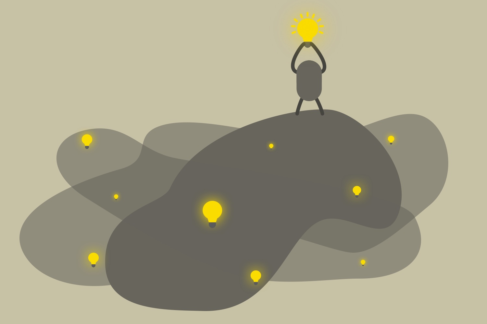

(project) reverie - overview and first prototype

Big Picture:
While scolling throug the internet i realized the best way to spread your random ideas, you get showering and thinking about life, was the r/lightbulb subreddit.
There are no websites online provideing a platform to discuss, develop an share ideas despite the fact that ideas are the only way mankind develops further.
So for me, looking for the next side-project-idea, this was a perfect start even if my vue/nodejs skills were ... weak.
The idea of ideas:
Providing a platform for users to exchange, develop and bring ideas to life together.
While thinking about the concept i got some ideas how to build this platform:
- Usig hashtags to cathegorize ideas and make it possible for users to follow a feed of ther interests/skills
- make it possible for businesses to get some ideas from their users on deveploping their product/service
- develop ideas in an tree-structure
- kind of tinder mode to vote
- giving users a private ideas sketchbook
- make it possible to subscribe to a idea to get news on an idea
- let users building working groups with their own chatroom on ideas to develop them like Github
- select an idea of the month an offer them sponsoring of businesses
- ...
First Prototype:
I decided to develop a simple first prototype by myself to get some first feedback of real users. It should be possible for users to post their ideas with hashtags and vote for those ideas.
Building the fontend was not that much of a problem. I already worked with vue in my last project.
The big part was the backend. The backends i wrote before were very rudimentary. No log in/authentication. No database. No ...
But with many try-and-error-cycles i somehow managed to build it. It is now running on an AWS EC2 server (only for testing).
Another reason why i wanted to build a first running prototype was to have somethng to show around and try to attract attention of people who want to participate.
So if you are interested in this project and want to participate or want to have a link to it feel free to send me a DM.
Currently i see it as side-project to gain some programming skills but if it turns out there is a real demand for a platform like this i als could imagine building a startup around this idea of ideas.